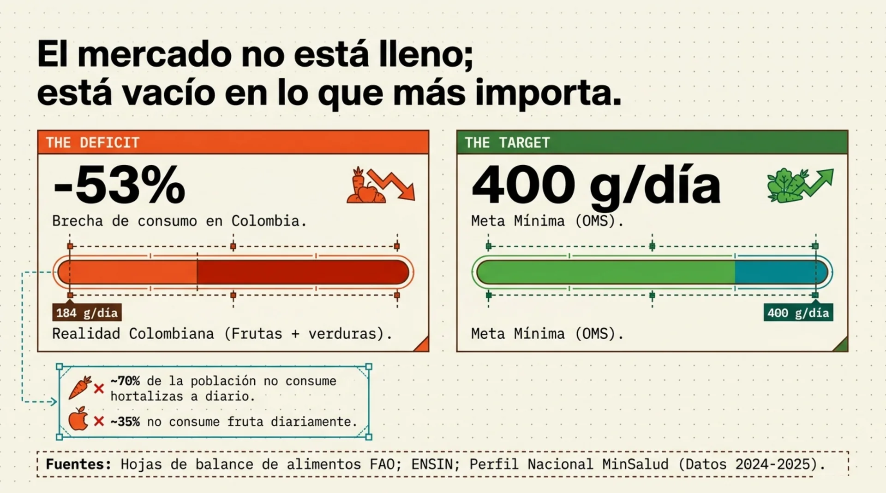
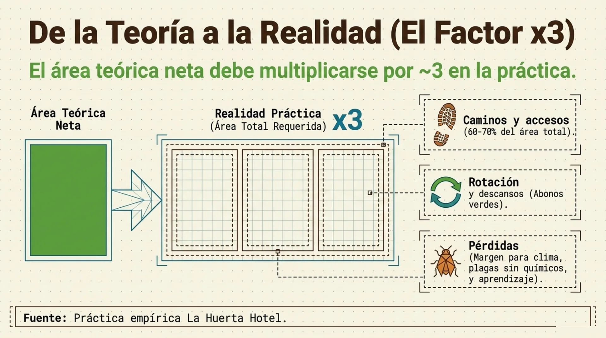
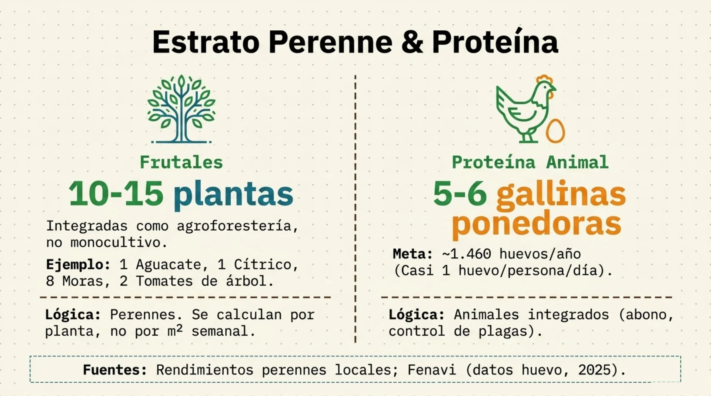
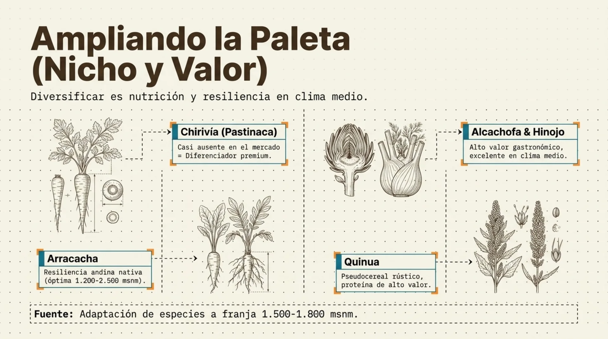

Qué sembrar,
cuánto y cada cuándo
Diversidad. De la dieta de tu familia a los metros cuadrados de tu cama de siembra.
Ya tienen suelo vivo.
Falta decidir qué le ponen encima.
Los tres principios anteriores construyen la despensa. Este decide quién come de ella, en qué orden y en qué cantidad.

La pregunta no es
qué sembrar.
Es cuánto y cada cuándo.
Casi todo el mundo siembra lo que le gusta, todo el mismo día. Dos meses después tiene 40 lechugas juntas y nada más. Eso no es una huerta: es una avalancha seguida de un desierto.

Por qué el bosque
no tiene un solo cultivo
La ecología de la diversidad, antes de la aritmética.
Son tres diversidades distintas
Unas fijan nitrógeno, otras descompactan, otras cubren el suelo, otras alimentan insectos. Cada una tiene un oficio.
Árbol, arbusto, hortaliza, cobertura, raíz. Toda la columna de luz y todo el perfil de suelo ocupados.
La misma cama con cultivos distintos a lo largo del año. Es la rotación, y es la que casi nadie planea.

Un monocultivo es
una mesa servida para la plaga
El mismo principio del mercado lleno que vimos con los microorganismos, pero ahora encima del suelo.
No se rota por cultivo.
Se rota por familia.
| Familia | Quiénes son | En la base de datos |
|---|---|---|
| Solanaceae | Tomate, ají, pimentón, berenjena, papa | 13 cultivos |
| Fabaceae | Fríjol, arveja, habichuela, guandul | 8 cultivos |
| Brassicaceae | Brócoli, coliflor, repollo, rábano, mizuna | 8 cultivos |
| Apiaceae | Zanahoria, cilantro, perejil, apio, arracacha | 5 cultivos |
| Amaryllidaceae | Cebolla larga, puerro, cebollín, ajo | 5 cultivos |
| 16 familias en total | 58 cultivos cargados | Y las que ustedes agreguen |
Base de datos de la Calculadora de Siembras La Huerta LAB v2.
Las plagas y los hongos
leen familias, no etiquetas
- El rábano y el brócoli parecen cultivos distintos: son la misma familia y comparten la misma polilla.
- La lechuga mizuna se vende como lechuga, pero es una crucífera. Si va detrás del repollo, la rotación no existió.
- La papa y el tomate comparten tizón tardío. Nunca seguidos en la misma cama.
- Cada familia explora una profundidad distinta y pide una mezcla distinta de minerales: alternar es nutrir mejor.

Policultivo en 3D
- Alto: frutales y maderables, sombra y biomasa.
- Medio: arbustos, banco de proteína, botón de oro.
- Bajo: las hortalizas, que son el ingreso semanal.
- Suelo: coberturas vivas y rastrojo. Nunca desnudo.
- Abajo: raíces de distinta profundidad trabajando capas distintas.
Toda la columna de luz aprovechada en el mismo metro cuadrado.

La rotación
por fases
El orden en que una cama recibe a sus cultivos durante el año.
Cuatro fases, siempre
en el mismo orden
Fríjol, arveja, habichuela. Fijan nitrógeno y dejan la cama cargada.
Lechuga, acelga, brócoli. Se comen el nitrógeno que dejó la fase 1.
Zanahoria, remolacha, cebolla. Suelo ya trabajado y sin exceso de nitrógeno.
Tomate, calabacín, papa. Los más exigentes. Y al terminar, bocashi.

Antes de la fase 1,
el maíz
En una cama nueva o compactada, el maíz entra primero: su raíz descompacta sin que nadie meta un azadón. Después arranca el ciclo normal.
Cada fase le deja algo
a la siguiente
- La leguminosa trae nitrógeno del aire gratis y lo deja en la cama.
- La hoja es la que más nitrógeno pide: entra justo cuando está disponible.
- La raíz entra después, cuando ya bajó el nitrógeno: si entra antes, hace follaje y no raíz.
- El fruto es el más exigente de todos y cierra con el aporte fuerte de bocashi.
Lo que rompe la rotación
- Repetir familia en la misma cama por comodidad ("es que el tomate ahí se da bien").
- Dejar la cama desnuda entre fase y fase. Si no hay cultivo, hay cobertura o abono verde.
- Sembrar todo el mismo día. La rotación es en el tiempo: sin escalonamiento no hay rotación, hay tandas.
Los tres se corrigen con un calendario. Eso es lo que vamos a armar en la segunda hora.
De la dieta
a los metros cuadrados
El cálculo que convierte "quiero comer de mi finca" en un número que se puede sembrar.
El mercado no está lleno:
está vacío en lo que más importa

La meta de producción anual

Tres variables, nada más

Rendimientos agroecológicos, no de catálogo

De la teoría a la realidad: por tres

La regla de oro del área de siembra

Los 20 m² por persona
ya traen el factor x3 adentro
Si alguien calcula 85 m² netos y encima le aplica el factor, termina pidiendo 255 m² y abandona antes de empezar.
Cero vacíos, cero avalanchas

Perennes y proteína

La semilla decide
tu autonomía

Lo que nadie más tiene en el mercado

La calculadora
de siembras
La regla de oro sirve para entender. Esto sirve para sembrar el lunes: tus personas, tus cultivos, tus metros.
Tres casillas
y una columna de Sí o No
Tu familia, o tus clientes. La Huerta trabaja con 50: es el mismo archivo.
7 días. Si solo puedes ir a la finca cada 15, pones 15 y todo se reajusta.
1 metro en La Huerta. De ahí salen los metros lineales que vas a medir con la cinta.
Después, en la columna INCLUIR, marcas Sí en lo que de verdad come tu gente. Todo lo demás se calcula solo.
Cuatro tipos de cultivo
Lechuga, brócoli, zanahoria. Se siembra un pedacito cada semana. 39 de los 58.
Tomate, calabacín, pimentón. Se siembra el lote completo. 19 de los 58.
Tomate, pepino, habichuela, arveja. Mismo cálculo, pero hay que construir la espaldera antes.
Cebollín, jengibre, cúrcuma, yuca, maracuyá. No rota: ocupa su área permanente.
Un pedacito cada semana
m² totales = (consumo semanal × ciclo en días) ÷ (rendimiento g/m² × 7)
m² por siembra semanal = m² totales × (frecuencia ÷ ciclo)
metros lineales = m² por siembra ÷ ancho de cama
Lechuga crespa, familia de 4: 2,5 m² totales en producción · 0,44 m² cada semana · 7 plántulas.
Cuando la primera siembra está lista, la segunda lleva una semana, la tercera dos. Cosechas todas las semanas sin bache.
La carrera de relevos
El relevo no es por el tiempo que tarda en crecer: es por el tiempo que dura dando fruto. Ese número está en la columna L y lo puedes cambiar con tus propios registros.
Lo que la calculadora te devuelve
| Cultivo | Tipo | m² totales | m² por siembra | Metros lineales | Plantas |
|---|---|---|---|---|---|
| Lechuga crespa | Única | 2,5 | 0,44 | 0,44 m | 7 |
| Brócoli | Única | 3,9 | 0,36 | 0,36 m | 2 |
| Zanahoria | Única | 3,9 | 0,23 | 0,23 m | 11 |
| Fríjol rojo | Única | 3,4 | 0,27 | 0,27 m | 3 |
| Tomate chonto | Múltiple | 1,7 | 1,71 (lote) | 1,71 m | 3 |
| Calabacín | Múltiple | 1,3 | 1,29 (lote) | 1,29 m | 3 |
Calculadora de Siembras La Huerta LAB v2 · 4 personas · frecuencia 7 días · camas de 1 m.
El número completo
Esos 30,8 m² netos, por el factor x3, son los ~85 m² de huerta de la regla de oro. El número de la lámina y el número de la calculadora son el mismo número.
52 semanas y 52 bolsitas
Te dice qué sembrar en cada una de las 52 semanas del año, con los cultivos Única escalonados, los Múltiple cada X semanas y los Fijos en la semana 1.
Una bolsa marcada por semana con las semillas de esa semana adentro. El lunes se saca la bolsa y se siembra. No hay que recordar nada.
Es el truco más simple del sistema y el que más gente copia: elimina de raíz la pregunta "¿qué tocaba sembrar hoy?".
La misma lógica,
con animales
| Especie | Consumo por persona/semana | Lo que calcula |
|---|---|---|
| Gallina ponedora | 12 huevos | Cuántas gallinas en postura y cuántos m² de galpón |
| Pollo de engorde | 705 g | Aves en levante y lotes por año |
| Cerdo (cama profunda) | 283 g | Animales activos y m² de corral |
| Cordero (silvopastoril) | 375 g | Corderos activos y área de potrero |
| Tilapia roja | 180 g | Peces y m² de estanque |
Datos propios de La Huerta LAB 2026 cruzados con Fenavi, PorkColombia, Fedegán y AUNAP. Mañana, con el Principio 6, estos números se vuelven carga animal.
Cómo meter tu cultivo
- En BASE_DATOS, las filas amarillas del final: nombre, categoría, consumo, ciclo, rendimiento, plantas por m², fase, tipo y familia.
- Columna L: 0 si es de cosecha única, o los días que produce si es múltiple.
- En CALCULADORA, escribes el nombre exacto en una fila amarilla y marcas Sí.
- Con tus registros de cosecha, corriges el rendimiento. Ahí la calculadora deja de ser nuestra y pasa a ser tuya.
Todo junto, en una página


Cuatro pasos
y ya estás sembrando
- Abres la calculadora y pones tu número de personas.
- Marcas Sí en 10 o 15 cultivos: los que de verdad come tu gente.
- Mides con cinta los metros lineales de la primera semana. Son menos de los que crees.
- Armas las bolsitas de las próximas 12 semanas y las dejas marcadas.
Ya sabemos qué sembrar
y cuánto. Falta el agua.
Principio 5 · Las plantas beben, no comen. Infiltración, curvas de nivel, terrazas y zanjas. Todo lo que calculamos hoy depende de que el agua se quede adentro del lote.